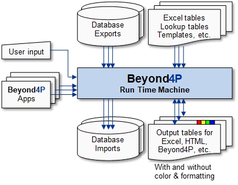

Introduction to Beyond4P
The Beyond4P tool supports a dedicated functional programming approach which provides high flexibility in processing tables generated
by common database systems (e.g. SAP, Salesforce, Filemaker, Oracle which generate exports in HTML and MHTML file formats) as well as
Excel (.xlsx, .xlsm( and comma separated tables (.CSV files). Additional file formats will be added in the future when necessary. The
key strength of Beyond4P is the ability to process contents in very large tables (talking about million rows and more) very effectively
and generate simple as well as formatted outputs ready for analysis and visualization with Excel, web browsers and other tools.

Beyond4P is an interpreted language which provides very powerful syntax structure, highly flexible data structures without need
of initial declarations and a large function library. Small apps containing very few statements can already perform sophisticated operations
such as merging two tables with different arrangements and formats.
You may wonder why obvious names such as if(), while() and for() are not considered as similar reserved keywords. In Beyond4P, the control flow statements
are actually procedure names which then influence executing further statements or blocks. Therefore, you can actually use if() as the given function.
Distinct Language Features
The following key features makes the Beyond4P language distinct from other popular programming languages:
| Interpreted | The run-time machine is designed to echo() interpret and process the code with very high performance. One performance aspects includes checking and tokenizing the code before starting to run. |
| Fully portable across system platforms | Beyond4P runs on WINDOWS, LINUX and MAC-OS. You can develop your apps so they run on all platforms without changing the code. Beyond4P provides harmonized functions for directory, file and system function calls, as well as system variables such as user names, key system directory names, etc. |
| Names with spaces and special characters | You are allowed to use spaces and special characters in function names, variable names, table names, column header names, etc. max value[] and '1%'[] are valid variable names. This allows you to use typical column headers, e.g. "Total Costs", without modifying them or putting quotations around. A valid function call could be " table create (customer table, supplier table, … ); " Function names like "table process selected rows" is easier to read than "TableProcessSelectedRows" |
| Variables | All simple variables end with brackets [] Example: value[]. If you forget them, then the name is just a text value. You can create child variables with any nesting, e.g. animal[dog]=poodle; animal[cat]=tiger; animal[dog,leg count]=4;. You can also define arrays, e.g. matrix[2,3] |
| Values | Numbers are values, text are values, too. In the example a[] = bull dog ; b[] = ' bull dog '; a[] is assiged with 'bull dog' containing one space between the two words, whare as b[] is assigned with ' bull dog ' where all spaces are preserved. Without quotation marks, outside spaces and repeated spaces betwen words are ignored. |
| Full UNICODE support | Every character counts as 1 character, regardless if ANSI (like 'e'), inside the Basic Multilingual Plane (like é and €), or in one of the other UNICODE planes (e.g. 😉). |
| Basic variable types | They are numeral, literal, boolean, date (manages date, time and both), parameter set, and void. |
| Parameter sets | Very powerful type to combine any number of variables and nested parameter sets into one parameter set. Example: names[] = {Abel, Beata, Charly}; |
| Dynamic weak typing | Beyond4P uses dynamic weak typing. The type is set once a value is assigned. Example: a[] = 1; automatically declares a[] as a numeric variable. The type will change if something non-numeric is assigned, eg. a[] = Hello;. |
| Tables | Tables are the heart of Beyond4P. Typically referenced as [table name : row , column ]. If a conext with table name and row number is given, e.g. inside a loop, then a simple reference like [column] is sufficient. Example: table process( membership list, echo( [Family Name], ", ", [First Name] ); |
| Accessing multiple values in tables | Powerful schems are available to access individual cells, entire rows or parts of them, entire columsn or parts of them, or combination of all. |
| Powerful table processing function library | A large number of procedures and functions is available to analyze, process and combine tables as you wish. These functions deliver highest machine performance. |
| Transactions | Very smart assignments for variables and table rows. You can replicate variables including all child members, or combine two variables including their member variables. |
| Function parameters accept code pieces | Unlike in other languages, some functions accept pieces of code such as expressions and statements as input parameters. These codes may be executed several time. Good example: table process( members, [full name] = [1st name] + ' ' + [last name] ); |
| Variable count function parameters | Some functions accept a variable number of parameters, with minimum, maximum and incrementals given. |
| User definable procedures and functions | You can defined own procedures and functions. Functions provide return values whereas procedures don't. You can assign multiple function names to the same user-defined code. In this case, the pre-defined local variable function name[] allows to identify the function name used to call the code. |
| Indirect parameter passing | Some procedures and functions allow one parameter set variable to be used to provide all function parameters in one. Example: a[] = { 2,3,4 }; echo( min( 2,3,4 ), ' and ', min( a[] ) ); // Output in both cases is 2. |
| Deep unary and binary operators | Deep operators (supplemented with the circumflex '^' symbol) can be used to calculate with elements inside parameter sets. Example: { 1,2,3 } +^ { 4,5,6 } results in { 5,7,9 }. However, { 1,2,3 } + { 4,5,6 } results in {1,2,3,4,5,6} instead. Deep operations are analogous to vector and matrix operations. |
| Control flow | Unless in other programming languages, control flow features like if(), for(), while(), return, etc. are actually procedure and function calls. Something as simple as if takes one boolean value as function parameter and decides whether to execute or skip the next statement or code block. In fact, this is made possible because procedures and functions can accept code pieces as it is required for functions like for. |
| Portable directory paths | Beyond4P accepts both '/' and '\' for path separators. They will be adjusted automatically to match with the operating system requirements. |
Think Big to be Successful !!!
You can unleash the full power of Beyond4P if you are thinking big. Doing all the detail coding on your own by foot (with lots of loops, variable assignments, doing comparisons of individual values, etc.) is nice and runs with acceptable performance. Other languages like Python can do this, too., but your patience is needed when processing big data with tens of million of elements.
| Hint 1 | Use the rich Beyond4P function library to process these tables and big data. Large tables will be analyzed and processed at naked machine performance. |
| Hint 2 | Use deep operations (vector and matrix operations) to process large amount of data inside tables and parameter sets. |
| Hint 3 | Think how you can formulate your code in a very compact manner without compromising comprehensibility. Doing great things with 5-20 lines of code is within reach. |